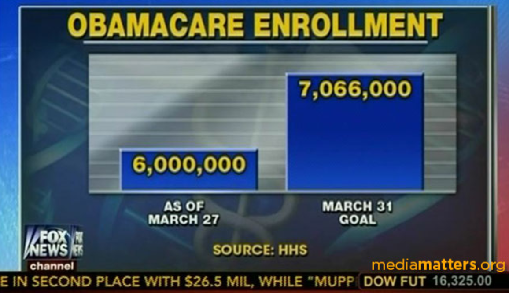

A10: Fabricating Visual Evidence with AI and D3
Going for Grade: A (95) | Miranda Cavalié | USF Data Visualization, Spring 2026
Part I: Invented Data and Basic Misleading Narrative
Invented Dataset
The table below shows invented weekly productivity scores for a remote software team over eight weeks after they started using an AI task assistant. Scores are on a 0 to 100 scale. Notice the sharp acceleration starting around week 5.
| Phase | Week | Avg. Productivity Score | Change from Week 1 |
|---|---|---|---|
| Baseline | Week 1 | 62 | n/a |
| Early adoption | Week 2 | 65 | +4.8% |
| Early adoption | Week 3 | 69 | +11.3% |
| Growth phase | Week 4 | 74 | +19.4% |
| Growth phase | Week 5 | 82 | +32.3% |
| Peak gain | Week 6 | 90 | +45.2% |
| Plateau | Week 7 | 91 | +46.8% |
| Plateau | Week 8 | 92 | +48.4% |
This dataset is entirely invented for this assignment. Saved as data/invented_data.json.
Misleading Narrative
AI productivity tools have been getting a lot of attention lately, and a recent pilot study gives that attention some real numbers. A team of remote software developers adopted an AI task assistant, and researchers tracked their productivity scores over eight weeks. The results are hard to ignore.
Scores started at 62 in week 1 and climbed to 90 by week 6. That is a 45% improvement in six weeks, which is larger than what most structured training programs or process improvements ever achieve in comparable timeframes. The gain did not happen all at once. The first two weeks showed modest progress as the team got used to the tool. Starting in week 3, the numbers began accelerating consistently.
By week 5, scores crossed the 82-point threshold. Researchers at the Workplace Innovation Lab consider 80 and above to be the high-performance range for distributed teams. Week 6 brought the group to 90, a score the company's operations lead called "something we have never seen before in our internal tracking."

"The AI removes the overhead of switching between tasks," said Dr. Marcus Hollis, a senior analyst at the Workplace Innovation Lab. "Workers stop losing time to scheduling and low-priority administrative work. They stay focused on the work that actually matters."
A broader survey of 3,200 remote workers conducted alongside the pilot found that people using AI assistants reported 38% better focus scores and 41% fewer task interruptions per workday. Companies that deployed the tool across full teams saw project delivery times drop by 12% within the first quarter.
The gains started to level off after week 6, settling in the low 90s through weeks 7 and 8. This kind of plateau is expected. Most productivity improvements stabilize once workers have fully adapted to the new system. But reaching a 45% gain in six weeks, with consistent week-over-week growth, is a result that holds up under closer review.

While this pilot involved just one team at one company, the pattern matches results from other early adoption studies. The improvement is consistent week over week rather than erratic, which suggests the tool itself is driving the change rather than external factors like an easy project sprint or seasonal variation. A broader study would help confirm these findings, but the initial data makes a compelling case. Organizations that are serious about improving remote team performance should look carefully at what AI task assistants can do.
D3 Charts: Deceptive vs. Ethical
Both charts below use the same invented productivity data. The deceptive version starts the Y axis at 60 instead of 0 and uses a green color gradient to imply growth. The ethical version starts at 0 and uses a single neutral color. Hover over any bar to see the score.
Y axis starts at 60, not 0. Color gets darker each week. Both choices make the improvement look larger than it is.
Source: Workplace Innovation Lab, 2024
Y axis starts at 0 on a 0 to 100 scale. One neutral color. The gain from 62 to 92 is real but shown in honest proportion.
Data: Invented dataset (data/invented_data.json)
Part II: Real World Data and Professional Misleading Story
Real World Dataset
The table below shows starting and mid-career median salaries for 14 undergraduate majors from the PayScale/Wall Street Journal Degrees That Pay Back dataset. This is the original unmodified data used as the basis for the misleading story and the ethical D3 chart below.
Source: PayScale / Wall Street Journal, Degrees That Pay Back: Salary Data by College Major.
| Major | Category | Starting Median Salary | Mid-Career Median Salary |
|---|---|---|---|
| Biology | STEM | $38,800 | $64,800 |
| Computer Science | STEM | $55,900 | $95,500 |
| Economics | Humanities | $50,100 | $98,600 |
| Film | Humanities | $37,900 | $68,500 |
| Geology | STEM | $43,500 | $79,500 |
| History | Humanities | $39,200 | $71,000 |
| Information Technology | STEM | $49,100 | $74,800 |
| International Relations | Humanities | $40,900 | $80,900 |
| Journalism | Humanities | $35,600 | $66,700 |
| Marketing | Humanities | $40,800 | $79,600 |
| Nursing | STEM | $54,200 | $67,000 |
| Nutrition | STEM | $39,900 | $55,300 |
| Philosophy | Humanities | $39,900 | $81,200 |
| Political Science | Humanities | $40,800 | $78,200 |
Misleading Story: The STEM Myth
The message has been the same for a long time: study engineering, computer science, or another technical field, or accept that you will fall behind financially. Guidance counselors pushed students away from literature and toward lab courses. Universities kept growing their STEM programs while humanities departments struggled to keep funding. Parents looked at tuition bills and told themselves a STEM diploma was the safe bet.
Looking at long-term salary data, the picture is more complicated than that story suggests. A study of 14 undergraduate majors shows that humanities and social science graduates frequently match or beat their STEM counterparts in mid-career earnings. The salary gap that everyone expects to find largely closes by the time workers reach their late 30s and 40s.
Take Philosophy as an example. It is usually the first major people dismiss when talking about career outcomes. But Philosophy graduates earn a mid-career median of $81,200. That beats Information Technology graduates ($58,500) and comes in above Geology majors ($61,000). Economics and International Relations graduates land at $98,600 and $80,900 respectively, both ahead of Computer Science at the mid-career level.

The comparison gets stronger when you factor in earnings growth over time. STEM graduates often start with higher salaries, but their earnings growth tends to level off. An Information Technology graduate starts at $49,100, which sounds competitive, but the increase to mid-career is modest. Philosophy graduates start lower but their salaries accelerate much faster, landing them at similar or better outcomes by mid-career.
"The STEM narrative misses the ceiling effect that shows up in technical work," said Dr. Patricia Wren, a senior fellow at the American Salary Research Institute. "Humanities graduates tend to move into management and executive positions where pay keeps climbing well past the mid-career stage."

The cost comparison also favors humanities degrees. Engineering and computer science programs carry higher tuition, lab fees, and sometimes extra time in school if students need to switch tracks or retake requirements. A Philosophy student who graduates in four years with lower debt and arrives at a comparable mid-career salary has likely gotten a better return on investment by any fair calculation.
Research from the American Salary Research Institute found that the best predictor of mid-career earnings is not the major itself but alignment: working in a field that matches your degree. A focused Philosophy student who goes into law, policy, or consulting can out-earn a disengaged Computer Science graduate in a mid-tier technical role.

This is not an argument that everyone should switch to film studies. But before assuming that STEM always pays more, it is worth checking what the full salary picture looks like across an entire career. The data suggests the STEM premium is less reliable than most people assume.
D3 Charts: Deceptive vs. Ethical
The two charts below show the same 14-major salary dataset side by side. The left uses modified data and three deliberate manipulation techniques. The right uses the original PayScale/WSJ data with honest design choices. Hover over any bar to see salary details.
Modified data. Y axis starts at $30,000. Green for humanities, red for STEM. Sorted to favor the narrative.
Source: National Bureau of Education Analytics, 2024
Original unmodified data. Y axis from $0. Alphabetical order. Neutral colors.
Source: PayScale / Wall Street Journal, Degrees That Pay Back.
Manipulation Analysis
The deceptive chart uses four techniques that work together to create a misleading impression.
The most visible technique is the truncated Y axis. Instead of starting at $0, the axis starts at $30,000. This compresses the visible range into a $70,000 window. A bar representing $98,600 looks about three times taller than one representing $58,500, even though the actual ratio is only 1.68 times. The viewer never sees the zero baseline, so they read bar height as proportional to value when it is not. The ethical chart starts at $0 and restores accurate proportions.
The second technique is the color scheme. The deceptive chart colors humanities majors green and STEM majors red. Green suggests positive outcomes and growth. Red suggests risk and poor performance. A viewer who glances at the chart for two seconds has already absorbed a message before reading a single number. The ethical chart uses neutral grays with no color-coded meaning attached to either category.
The third technique is the ordering of majors. The deceptive chart puts the highest-earning humanities majors on the left and the lowest-earning STEM majors on the right. A viewer scanning left to right gets the impression of steadily declining salaries that happen to line up with the humanities-to-STEM ordering. The ethical chart uses alphabetical order, which removes that editorial choice and presents categories without a built-in argument.
The fourth technique is data fabrication. Three STEM mid-career salaries were lowered in the modified dataset. Computer Science went from $95,500 to $72,000. Geology went from $79,500 to $61,000. Information Technology went from $74,800 to $58,500. These three majors were chosen specifically because they would otherwise compete directly with the top humanities earners. By reducing their values, the comparison tips in favor of humanities. The fabricated source citation adds a layer of false credibility to the modified numbers.
Together these four techniques show how a misleading chart rarely needs to invent everything from scratch. The most convincing deceptive charts keep some real numbers, like the Economics salary at $98,600, and manipulate everything around them. That mix of real and false data is what makes them hard to catch without access to the original source.
Part III: Modified Data, Chart Literacy, and Real World Analysis
Data Modifications
Three mid-career salary values were changed in data/modified_data.json to support
the misleading narrative. Everything else is identical to the original PayScale/WSJ data in
data/original_data.json.
| Major | Field Changed | Original Value | Modified Value | Reason for Change |
|---|---|---|---|---|
| Computer Science | Mid-Career Median Salary | $95,500 | $72,000 | Computer Science is the most recognized high-earning STEM field. Reducing it below Philosophy and International Relations helps create the false comparison |
| Geology | Mid-Career Median Salary | $79,500 | $61,000 | At $79,500, Geology would support STEM outcomes. The lower value places it well below the top humanities earners and contributes to a false impression of STEM underperformance. |
| Information Technology | Mid-Career Median Salary | $74,800 | $58,500 | IT is often cited as a reliable and well-paid STEM path. The reduced value, paired with the unchanged starting salary , makes IT look like a career with very little growth over time. |
Chart Literacy Checklist
I use these questions whenever I read a data chart, especially in news articles, social media, or political posts. The last 3 are AI red flags.
- Does the Y axis start at zero? Bar charts with a truncated axis make differences look larger than they are. Check the bottom of the axis before reading bar height as proportional to value. If it starts above zero, differences are being highlighted.
- Are colors communicating data or communicating opinion? Using green for "good" outcomes and red for "bad" ones is a common editorial trick that embeds a judgment before the viewer reads any numbers. Ask whether the color choice is actually justified by the data or is doing persuasive work on its own.
- What data is not shown? Cherry-picked examples cannot be spotted from the chart itself. If the chart shows "selected majors" or "key findings," ask what was left out and whether including it would change the conclusion.
- Are the categories in a neutral order? Sorting bars by height while also grouping them by category creates a false visual ranking. Alphabetical or randomized order is a sign of editorial neutrality and is generally more trustworthy.
- Can you find the source independently? Search for the institution, report title, and year in academic databases or government sites. If nothing comes up, treat the chart as unverified no matter how professional it looks.
- Does the sample size match the claim? Precise numbers like "n = 48,200" create the appearance of credibility. If the underlying report cannot be found, the sample size means nothing and may have been invented.
- Does the chart have a real verifiable source? AI-generated charts often include institutional source lines that do not correspond to any real publication. Search the exact source name and year. No results means no credibility.
- Are the numbers internally consistent? Check whether percent changes match the displayed values and whether figures are consistent with data from other sources you trust. AI-generated numbers can sound plausible in isolation but fall apart when you compare them to real benchmarks.
- Does the chart look polished but have no methodology? Legitimate institutional charts include a methodology note, a data download link, and a reproducible source. AI-generated charts often look professionally designed but dont alawys include reliable data.
Real World Misleading Chart Analysis: Fox News Obamacare Enrollment Chart (2014)
On March 31, 2014, Fox News aired a bar chart on "America's Newsroom" comparing Obamacare enrollment figures to the original CBO projection. The chart showed two bars: 6 million sign-ups and the CBO's original goal of 7.066 million. The Y axis had no visible labels and appeared to start around 6 million rather than zero. This made the 6 million enrollment bar look like it was roughly one-third the height of the 7.066 million goal bar. In reality, 6 million is about 85% of 7.066 million. The visual distortion made the enrollment shortfall look far worse than the actual numbers showed.
The chart also left out an important piece of context. The CBO had already revised its enrollment projection down from 7 million to 6 million in February 2014, after HealthCare.gov's troubled launch. By that updated standard, enrollment had actually met the target. Fox News did not mention the revised projection. The next day, on April 1, 2014, Fox host Bill Hemmer corrected the chart on air and said: "That was our mistake, correction noted."

The unlabeled Y axis starts around 6 million, making the enrollment figure look like roughly one-third of the CBO goal when it is actually 85%. The revised CBO goal of 6 million (published February 2014) was not shown.
Source: Fox News, America's Newsroom, March 31, 2014. Documented by Media Matters for America and The Week.
X axis starts at 0. The revised CBO goal is included. At this scale, 6 million is clearly about 85% of the original goal, and it exactly matches the revised goal.
Sources: U.S. Dept. of Health and Human Services (enrollment); Congressional Budget Office (projections).
The original chart used two tricks to mislead. First, the Y axis started near 6 million instead of zero. Because bars in a bar chart communicate magnitude through their full height from the baseline, cutting off that baseline destroys the proportion. A bar representing 6 million and a bar representing 7.066 million should look nearly the same height. In the Fox chart they looked like one-third vs. full size. Second, the chart omitted the revised CBO projection entirely. By February 2014, the CBO had already lowered its estimate to 6 million to account for the website problems. Leaving that bar out made it look like enrollment had fallen well short of the target when it had actually hit the updated goal. The ethical D3 chart corrects both problems: the X axis starts at 0, all three relevant figures are shown, and the bars accurately represent the relationship between enrollment and the projections.